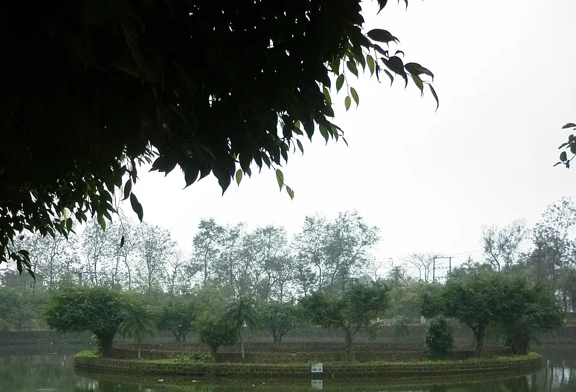
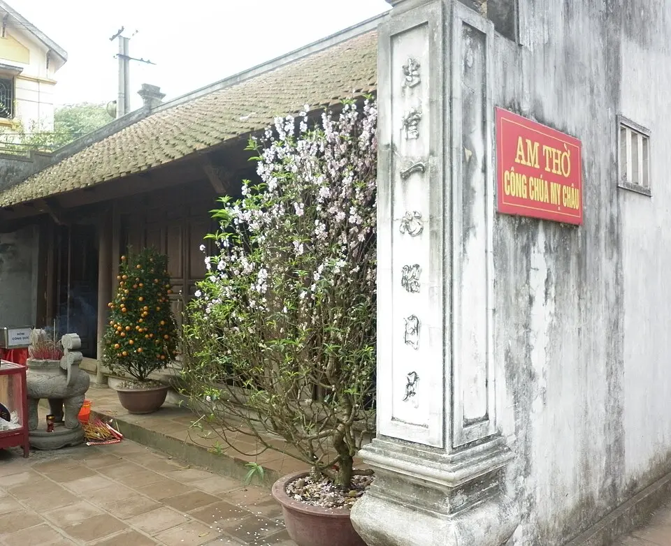
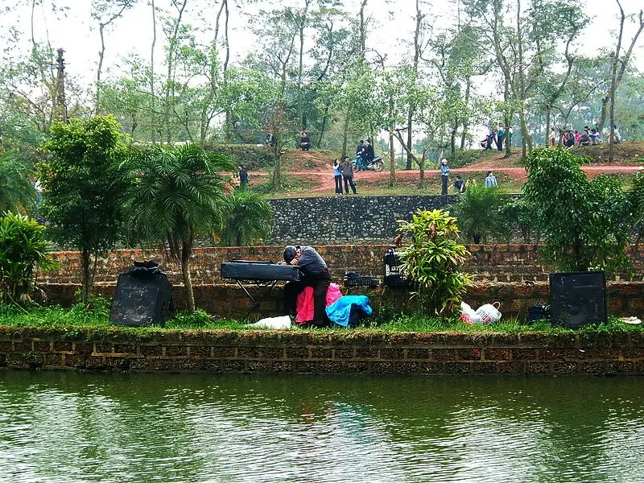
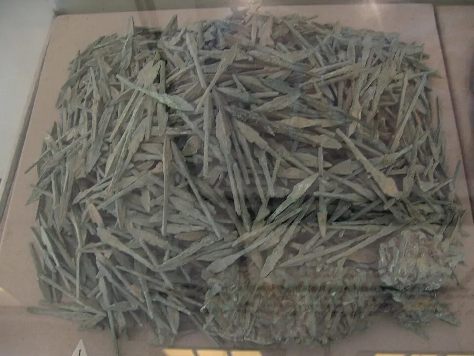

Nỏ thần Cổ Loa: truyền thuyết và hố chứa gần một vạn mũi tên
Truyền thuyết kể về chiếc nỏ có lẫy làm bằng móng rùa thần và một nàng công chúa rắc lông ngỗng dẫn đường cho giặc. Năm 1959, đất Cổ Loa trả lại thứ cụ thể hơn: 93 kg mũi tên đồng chôn trong một cái hố vuông.

Tháng 6 năm 1959, công nhân làm con đường từ quốc lộ 3 xuyên qua khu di tích Cổ Loa để vào một xưởng phim. Tại chỗ dân gọi là Cầu Vực, họ đào trúng một cái hố gần vuông, mỗi cạnh chừng một mét, sâu khoảng 1,2 mét. Trong hố là 93 kg mũi tên đồng, ước gần một vạn chiếc, xếp thành từng bó ngay ngắn. Hơn hai nghìn năm, người Việt kể về một chiếc nỏ thần bắn một phát chết cả vạn người. Đây là lần đầu tiên đất Cổ Loa đưa ra một thứ có thể cân, đo và đếm được.
Theo Lĩnh Nam chích quái, rùa vàng hiện lên và nói: "Kẻ ngồi sau ngựa chính là giặc đó!"
Truyền thuyết kể gì
Bản đầy đủ nhất nằm trong truyện Kim Quy của Lĩnh Nam chích quái. An Dương Vương đắp thành ở Phong Khê, đắp đến đâu lở đến đó. Một con rùa vàng tự xưng là sứ Thanh Giang hiện lên, giúp vua diệt yêu tinh, trong đó có một con gà trắng sống nghìn năm. Thành xây nửa tháng thì xong, xoắn như trôn ốc, nên gọi là Loa Thành. Trước khi đi, rùa tháo một chiếc vuốt để vua làm lẫy nỏ, và tướng Cao Lỗ chế ra chiếc nỏ thần.
Triệu Đà, vua nước Nam Việt, đánh không lại nên xin hòa, rồi cho con trai là Trọng Thủy sang cưới Mị Châu, con gái An Dương Vương. Trọng Thủy dỗ vợ cho xem nỏ, ngầm đánh tráo cái lẫy, rồi xin về thăm cha. Mị Châu hứa sẽ rứt lông ngỗng trên áo rắc ở ngã ba đường làm dấu. Quân Triệu kéo sang, nỏ mất linh nghiệm. Vua chở con gái chạy ra biển. Theo Lĩnh Nam chích quái, rùa vàng hiện lên và nói: "Kẻ ngồi sau ngựa chính là giặc đó!" Vua chém Mị Châu, máu nàng chảy xuống nước, trai sò ăn phải hóa thành ngọc. Trọng Thủy đuổi theo, ôm xác vợ về, rồi nhảy xuống giếng mà chết. Nhưng bộ sử viết gần thời Âu Lạc nhất lại kể một câu chuyện ngắn hơn nhiều.
Sử sách chép gì


Các lớp của câu chuyện xuất hiện dần qua từng bộ sách. Sử ký của Tư Mã Thiên, viết gần thời Âu Lạc nhất, chỉ chép rằng sau khi Lã hậu mất năm 180 TCN, Triệu Đà dùng quân uy hiếp và của cải mua chuộc để khuất phục Mân Việt, Tây Âu và Lạc. Sử ký không nhắc tên An Dương Vương, không có nỏ thần, không có Mị Châu. Vì thế nhiều nhà nghiên cứu hiện đại đặt sự sụp đổ của Âu Lạc vào khoảng năm 179 TCN, trong khi Đại Việt sử ký toàn thư chép năm 208 TCN.
Hai bộ sách thời Trần là Đại Việt sử lược và An Nam chí lược đã có chiếc nỏ và chuyện Trọng Thủy đổi lẫy. Đại Việt sử lược tả nỏ của Cao Lỗ bắn một phát ra mười mũi tên. Nhưng cả hai đều không có chuyện rắc lông ngỗng, và cũng không có cảnh vua cha chém con gái. Chi tiết lông ngỗng xuất hiện sớm nhất trong Lĩnh Nam chích quái, một tập truyện kỳ lạ, không phải sách sử.
Chính sử gia Ngô Sĩ Liên cũng đã nghi ngờ. Trong lời bàn ở Toàn thư, ông cho rằng chuyện rắc lông ngỗng chưa chắc đã có, vì chuyện con gái Triệu Việt Vương nhiều thế kỷ sau lại được kể gần y như vậy. Ông kết luận nỏ thần hay mũ đâu mâu chỉ là cách người chép sử mượn vật để nói về việc mất nước. Nếu sách vở còn nghi ngờ, thì đất Cổ Loa có thể nói gì?
Đất Cổ Loa nói gì


Truyền thuyết nói thành có chín vòng xoáy ốc. Dấu tích còn lại cho thấy ba vòng. Vòng ngoài dài khoảng 8 km, vòng giữa khoảng 6,5 km, vòng trong hình chữ nhật dài khoảng 1,6 km và có thể được đắp muộn hơn, dưới thời Ngô Quyền. Có đoạn lũy còn cao đến 12 mét, chân rộng 20 đến 30 mét. Người xưa kè đá dưới chân thành và rải những lớp gốm vỡ để chống sạt. Các nhà khảo cổ ước tính khối đất đào đắp vào khoảng 2,2 triệu mét khối.
Năm 2010, nhóm của Nam C. Kim, Lại Văn Tới và Trịnh Hoàng Hiệp công bố trên tạp chí Antiquity loạt niên đại carbon phóng xạ của Cổ Loa. Kết quả cho thấy lũy chính của vòng giữa được đắp vào những thế kỷ cuối trước Công nguyên, trước khi nhà Hán đến, và bên dưới còn có một tuyến phòng thủ sớm hơn. Đợt đào năm 2007 đến 2008 cắt ngang toàn bộ bề rộng lũy giữa và nhận ra ba thời kỳ, năm giai đoạn xây dựng chính. Nói cách khác, đây là công trình của một chính quyền bản địa đủ sức huy động một lực lượng lao động lớn, không phải phép của một con rùa. Và ngay cạnh cung điện, người xưa đã có một xưởng đúc tên.
Kho tên và xưởng đúc


Theo TS Lại Văn Tới của Viện Khảo cổ học, mũi tên ở Cầu Vực có bảy cỡ, dài nhất 11 cm, ngắn nhất 6 cm, đều có ba cạnh. Chỉ khoảng một phần tư đã được mài sửa. Ba phần tư còn lại vẫn mang vết đúc, chưa từng được dùng. Đất trong hố đồng nhất, không có lớp văn hóa nào khác. Các nhà khảo cổ cho rằng đây là kho tên vừa ra lò, được chôn giấu vội khi có biến.
Từ năm 2004 đến 2007, các đợt khai quật ở khu Đền Thượng tìm thấy dấu tích lò đúc, cùng hàng trăm mang khuôn đá dùng để đúc mũi tên. Mỗi bộ khuôn gồm ba mảnh, mỗi mảnh tạo một cạnh của mũi tên. Xưởng nằm ở góc tây nam thành Nội, sát khu cung điện. Bộ sưu tập khuôn đúc này sau đó được công nhận là bảo vật quốc gia. Cổ Loa cũng cho ra hai chiếc lẫy nỏ bằng đồng, nay ở Bảo tàng Lịch sử quốc gia.
Vẫn có tiếng nói thận trọng. Chính bài viết của Lại Văn Tới ghi nhận rằng mũi tên đồng tương tự cũng được làm ở nhiều nơi khác trong thế kỷ 3 và 2 TCN, nên có người còn hỏi liệu kho tên này có đúng là của An Dương Vương hay không.
Chiếc nỏ thần bắn một phát chết vạn người chưa bao giờ được tìm thấy. Những gì còn lại là ba vòng lũy đất, một hố chứa gần một vạn mũi tên và một xưởng đúc cạnh cung điện. Truyền thuyết đã phóng đại sức mạnh ấy, nhưng không bịa ra nó từ hư không.